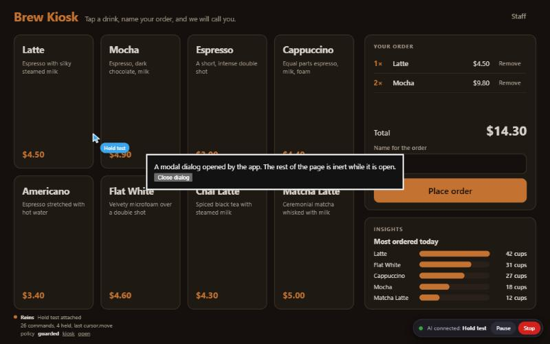

Quickstart: run the demo
Run Brew Kiosk, the demo app in the repository, with a hub and a scripted agent, and watch an agent order a coffee under your control.
What you need #
- A checkout of the repository.
- Node 22 or newer.
- A Chromium-based browser. The demo has been run end to end in Chromium, with the page served from loopback. Firefox and Safari have not been tested.
Tip
To see Reins work without installing anything, open the playground. It runs the in-tab shape on this site: the same driver, broker and agent SDK, with no hub.
Install #
In the checkout:
npm installnpm install also builds the package.
Start the three parts #
In three terminals. First the hub:
npm run demo:hubnpm run demo:hub starts the hub with the open profile, a surface key for the demo app, and a keyed audit log under .reins/.
Then the page, a small static server on loopback:
npm run demoOpen http://127.0.0.1:5173 before starting the agent. Then the scripted agent:
npm run demo:agentWhat happens #
The page asks you to approve the agent. Then you can watch it order a coffee: it moves its cursor, clicks, calls app actions, shows a chart from a file, circles the total with the live pointer stream, and stops at the consent prompt before placing the order.
The script, examples/kiosk/agent-demo.mjs, prints each step in its terminal:
- It attaches, asking for the scopes
observe,act,ui,cursorandshow. You approve on the page. - It prints the prompt card: everything a model needs to know to drive this app.
- It prints the screen as the compact tree, with the number of characters.
- It shows its cursor and a toast.
- It points at a drink, highlights it and adds it.
- It adds two mochas with one app action, then tries an item that is not on the menu: the arguments fail the schema and the answer is
E_BAD_ARGS. - It fills in a name.
- It observes again and prints the delta: only what changed since step 3.
- It sends a chart from a file to the app's
insightsview. The data never passes through a model. - It circles the total with the live pointer stream.
- It asks to place the order, a sensitive action. The page asks you.
- It tries a dangerous action and a private field. Both stay out of reach.
- It says goodbye, hides the cursor and detaches.
Whatever the page's policy refuses is printed and the script carries on.


While the agent is attached, the indicator in the corner names it, with Pause and Stop. Try both. Pause holds every command that changes the page; Stop revokes the agent's access.
Note
The film and these stills were recorded before the panel existed. Today the text of the indicator is a button that opens it, and the card for an action has a third button, "Always allow".

Change how much it asks #
Select "AI connected" in the corner for the panel. Set the agent to auto there and the order is placed without the prompt. Raising a level takes a second step that says what stops asking, and the indicator then shows the level. See Permission levels.
Talk to it #
Start the agent with npm run demo:agent -- --chat. After its tour it stays attached: select "AI connected", then the Chat tab, and type "add two mochas", "what is in my order" or "place my order". The page still asks you before the order is placed. "stop" sends it away. The answers are a script in examples/kiosk/public/chat-script.js; no model is involved. --chat-only skips the tour. See Chat.
The same script under the kiosk policy #
Open http://127.0.0.1:5173/?profile=kiosk and run the agent again. Under the kiosk profile, synthetic clicks and placing the order are refused outright.
The in-tab shape #
Open http://127.0.0.1:5173/inpage.html. No hub is involved (only npm run demo needs to be running), and a scripted assistant in the page asks to attach when you press its button. It adds a latte and then listens in the Chat tab with the same script, until you type "stop". See The in-tab shape.
If something does not work #
- The agent says Brew Kiosk is not connected: open the page first, and check that the hub is running.
- The page shows the hub as unreachable: the demo page connects to
ws://127.0.0.1:7346. See Troubleshooting. - Port 7346 or 5173 is taken: name others with
npm run demo:hub -- --port 7446,npm run demo -- --port 5273 --hub-port 7446andnpm run demo:agent -- --url ws://127.0.0.1:7446.
Next #
- Make an app drivable: what the demo page does, in your own app.
- Drive it from Node: what the scripted agent does, in your own code.